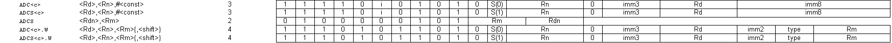
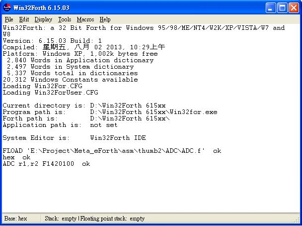

1. Tumb2 ADC 指令原始描述
ADC (immediate)
ADC<c> <Rd>,<Rn>,#<const>
ADCS<c> <Rd>,<Rn>,#<const>
ADC (register) T1
ADCS <Rdn>,<Rm>
ADC (register) T2
ADC<c>.W <Rd>,<Rn>,<Rm>{,<shift>}
ADCS<c>.W <Rd>,<Rn>,<Rm>{,<shift>}
Encoding T1 All versions of the Thumb instruction set from Thumb-2 onwards.
S If present, specifies that the instruction updates the flags. Otherwise, the instruction does not update the flags.
Standard assembler syntax fields
The following assembler syntax fields are standard across all or most instructions:
<c> Is an optional field. It specifies the condition under which the instruction is executed.
If <c>is omitted, it defaults to always (AL). For details see Conditional execution on page 3-34.
<q> Specifies optional assembler qualifiers on the instruction. The following qualifiers are
defined:
.N Meaning narrow, specifies that the assembler must select a 16-bit encoding for the instruction. If this is not possible, an assembler error is produced.
.W Meaning wide, specifies that the assembler must select a 32-bit encoding for theinstruction. If this is not possible, n assembler error is produced.
If neither .W nor .N is specified, the assembler can select either 16-bit or 32-bit encodings.
If both are available, it must select a 16-bit encoding. In a few cases, more than one encoding of the same length can be available for an instruction. The rules for selecting between such
encodings are instruction-specific and are part of the instruction description.
Note
When assembling to ARM, the .N qualifier will produce an assembler error and the .W
qualifier has no effect, because all ARM instructions have length 32 bits.
4.3 Constant shifts applied to a register
Thumb-2 constant-shifted register operands are the same as in the ARM instruction set, except that the input bits come from different positions.
<shift> is an optional shift to be applied to <Rm>. It can be any one of:
(omitted) Equivalent to LSL #0.
LSL #n logical shift left n bits. 0 ? n ? 31.
LSR #n logical shift right n bits. 1 ? n ? 32.
ASR #n arithmetic shift right n bits. 1 ? n ? 32.
ROR #n rotate right n bits. 1 ? n ? 31.
RRX rotate right one bit, with extend. Bit[0] is written to shifter_carry_out, bits[31:1] are shifted right one bit, and the Carry Flag is shifted into bit[31].
4.3.1 Encoding
The assembler encodes <shift> into two type bits and five immediate bits, as follows:
(omitted) type = 0b00, immediate = 0.
LSL #n type = 0b00, immediate = n.
LSR #n type = 0b01.
If n < 32, immediate = n.
If n == 32, immediate = 0.
ASR #n type = 0b10.
If n < 32, immediate = n.
If n == 32, immediate = 0.
ROR #n type = 0b11, immediate = n.
RRX type = 0b11, immediate = 0.
2.ADC&ADCS的描述

ADC (immediate)
ADC<c> <Rd4b11>,<Rn4b19>,#<I1b26:Imm3b14:imm8b7> ::S1b20=0
ADCS<c> <Rd4b11>,<Rn4b19>,#<I1b26:Imm3b14:imm8b7> ::S1b20=1
ADC (register) T1
ADCS <Rdn3b2>,<Rm3b5>
ADC (register) T2
ADC<c>.W <Rd4b11>,<Rn4b19>,<Rm4b3>,<shiftType2b5 imm3b14:imm2b7> ::S1b20=0
ADCS<c>.W <Rd4b11>,<Rn4b19>,<Rm4b3>,<shiftType2b5 imm3b14:imm2b7> ::S1b20=1
Rd4b11 目的暫存器R0~R15 放在 bit11~8 的位置 共4bit
Rn4b19 來源暫存器R0~R15 放在 bit19~16 的位置 共4bit
Rdn3b2 目的暫存器R0~R7 放在 bit2~0 的位置 共3bit
Rm3b5 來源暫存器R0~R7 放在 bit5~3 的位置 共3bit
I1b26:Imm3b14:imm8b7 立即值
<shiftType2b5 imm3b14:imm2b7> 旋轉運算值
|
|
||||
|
ASM助憶碼特徵 |
對應類型分支 |
類型轉變成機械碼 |
.case 處理 |
連接網址 |
|
: ADC ( --- ) state @ if \ _ADC [COMPILE] .case else _ADC then ; IMMEDIATE |
: _ADC ( -- ) arg ADC_<Rd4b11>,<Rn4b19> ; |
: ADC_<Rd4b11>,<Rn4b19> ( -- ) 0xF1400000 \ Code_ADC 0 n1b20 or \ 0 S1b20 A1$ count $>reg ( dup rd ! ) n4b11 or \ a$1---> Rd4b11 A2$ count $>reg ( dup rn ! ) n4b19 or \ a$2---> Rn4b19 AsmCode2! ; |
模擬器..... |
|
|
 |
||||
\ asm arg
create a1$ 512 allot
create a2$ 512 allot
create a3$ 512 allot
create a4$ 512 allot
: arg ( --- kiss )
0x0a word count a1$ place
a1$ count ascii ; scan temp$ place \ 取得註解
a1$ c@ temp$ c@ - a1$ c! \ 取得參數
a1$ count ascii , scan a2$ place \ 分離 第一跟二三參數
a1$ c@ a2$ c@ - a1$ c! \ 取得 第一參數
a1$ dup count BL skip rot place \ 第一參數去頭
a1$ dup count -trailing rot place \ 第一參數去尾
a2$ dup count ascii , skip rot place \ 第二三參數去頭
a2$ count ascii , scan a3$ place \ 分離 第二跟三參數
a2$ c@ a3$ c@ - a2$ c! \ 取得 第二參數
a2$ dup count -trailing rot place \ 第二參數去尾
a3$ dup count ascii , skip rot place \ 第三參數去頭
a3$ dup count -trailing rot place \ 第三參數去尾
;
: AsmCode!
;
: AsmCode2!
u.
;
: n4b11 ( m -- n )
8 lshift \ 11-4+1 = 8
;
: n4b19 ( m -- n )
16 lshift \ 19-4+1 = 16
;
: n1b20 ( m -- n )
20 lshift \ 20-1+1 = 20
;
: $>reg ( adr count --- n )
1 - swap
1 + swap
number?
drop drop
;
\ Thumb2
\ ADC
: ADC_<Rd4b11>,<Rn4b19> ( -- )
0xF1400000 \ Code_ADC
0 n1b20 or \ 0 S1b20
A1$ count $>reg ( dup rd ! ) n4b11 or \ a$1---> Rd4b11
A2$ count $>reg ( dup rn ! ) n4b19 or \ a$2---> Rn4b19
AsmCode2!
;
: _ADC ( -- )
arg
ADC_<Rd4b11>,<Rn4b19>
;
: ADC ( --- )
state @
if
\ _ADC [COMPILE] .case
else
_ADC
then
; IMMEDIATE